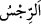

Âl-i abâ Rasûlullah ve kızı,
Toplandıkları zaman Murtazâ, sonra da iki torunu.
Keşfü’l-esrâr’da der ki: “ yâni kir ve günah, çirkin işlerde, kötü ahlâkta olur.
Çirkin işler, görünen ve görünmeyeni ile kötülükler ve fuhşiyattır. Kötü ahlâk ise, nefsin
isteklerine uymak, bid‘at, cimrilik, hırs, akraba ziyaretini kesmek ve benzeri şeylerdir.
Rabbü’l-âlemîn onları bid‘at yerine sünnet yoluna koydu, cimrilik yerine cömertlik, hırs
yerine kanâat, akrabadan ilişkiyi kesme yerine ziyâret ve şefkat duygusunu onlara nasib
etti. Sonra şöyle buyurdu: “Sizi tertemiz yapmak istiyor.”
Kendinizi beğenmekten, Allah üzerinde bir hakkınız (nazınız) olduğunu düşünmekten
ya da ibâdetlerinize bakıp güvenmekten sizi temizlemek istiyor. Pîr-i tarîkat (Abdullah
Ensârî Herevî) şöyle buyurmuştur: “Bakış iki türlüdür: İnsânî bakış ve Rahmânî bakış.
İnsânî bakış, senin kendine bakmandır. Rahmânî bakış (nazar) ise, Hakk’ın sana
bakmasıdır. Senin benliğinden insânî bakış gitmedikçe, Rahmânî bakış kalbine inip
yerleşmez. Ey miskin! Benlikle bulaşmış olan bu ibâdetine niçin bakıyorsun? Onu
ihtiyaçsızlık dergâhıyla niçin ölçüp mukâyese ediyorsun? Haberin yok ki, dünyânın
bütün sıddîklarının, yâni samîmî insanlarının amellerini ve gökteki kudsî meleklerin tüm
tâatlerini toplasan, Celâl sâhibi Allah Teâlâ’nın terâzisine (mîzânına) koysan, sivrisinek
kanadı kadar ağırlık tutmaz. Ancak Hak Teâlâ hiçbir ihtiyâcı olmamakla birlikte, kulun
kulluğunu beğenir ve kulluk yolunu ona gösterir.”
Molla Câmî şöyle der:
İnsanlar bazen kendi amellerine güvenirler,
Ona senin kerem ve iyiliğinden başka bir dayanak olmaz,
Ey kerem sâhibi, ona (kuluna) lütfunla yardım eyle,
Çünkü o senin adâletinden, yine senin lütfuna sığınıyor.
et-Te’vîlâtü’n-Necmiyye’de der ki: “Evlerinizde oturun.” Burada Allah Teâlâ
kalplere ve ruhlara ilâhî hazrete yönelerek melekût âlemindeki vatanlarında karar
kılmalarını emretmektedir. “Eski cahiliye âdetinde olduğu gibi açılıp saçılmayın.”
Câhillerin âdeti olduğu gibi dünyâ ziynet ve şehvetlerine rağbet ederek hisler âlemine
çıkmayın. Devamlı huzur, murâkabe, seyr ile Allâh’a urûc etmek sûretiyle “namazı
kılın.” Çünkü namaz mü’minin mi‘râcıdır.
Mü’min namazda iki elini dünyâdan kaldırıp çeker ve dünyânın üzerine tekbir getirir.
Allah’tan başka her şeyden yüz çevirerek Allâh’a yönelir. İnsânî tekebbür/büyüklenme
makamından hayvânî rükû tevâzuuna döner. Oradan nebâtî secde huşûuna döner. Oradan
cemâdî kuûda (cansız varlıklara âid oturuşa) döner. Çünkü insan en aşağı mertebe olan
kalıba bu yolla indirilmiştir. Dönüşü de rûhânî başlangıçta bulunduğu şuhûd/müşâhede
makamına ulaşana kadar bu yolla olur. Sonra tahiyyât ve ilâhî hazreti senâ ile
teşehhüdde bulunur. Sonra namazı ikame ederek ve devam ettirerek ulûhiyet denizinde